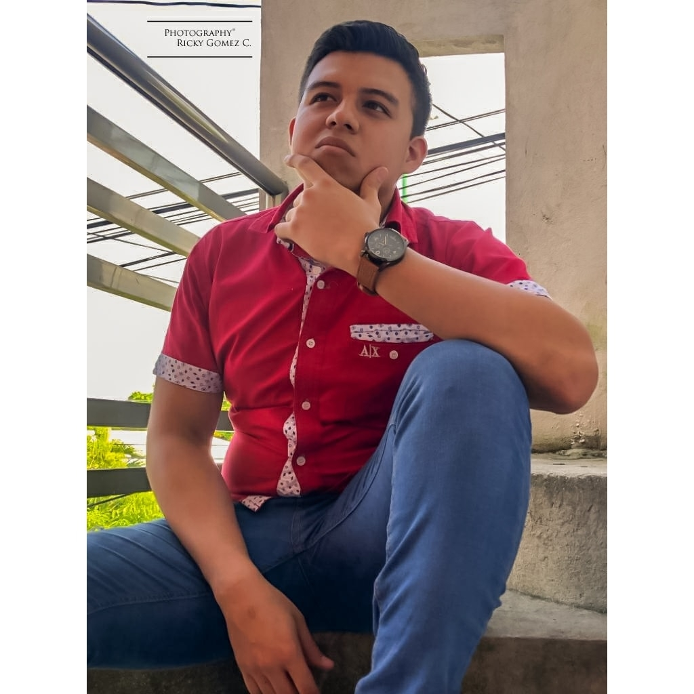

Me llamo Jesús Manuel Guzmán Morales, tengo 22 años y actualmente curso una Ingeniería en Sistemas Computacionales. Me encuentro en Noveno semestre. Nací en febrero del año 2001, en Cunduacán Tabasco.
Antecedentes académicos: En la escuela secundaria Manuel Gil y Saenz y estuve en un club de lectura.
Obtuve reconocimientos en soporte y mantenimiento de equipo de cómputo en la preparatoria, Cetis 40. El logro más grande que tuve fue culminar mis estudios de preparatoria.
Intereses y pasiones: Mi interés personal acerca de la carrera, es poder desarrollar páginas web para negocios, incluso para propios que pueda tener en el futuro.
El lenguaje con el que he trabajado es con el C++, trabajé en un proyecto de un software para una tienda.
Experiencia laboral o prácticas: Trabajé para una empresa familiar, la cual trata de internet por fibra óptica, me dediqué un tiempo a la configuración de módems y routers.
Proyectos personales : Realizar base de datos mediante query, mi parecer es uno de los pequeños en los que pude trabajar, no tengo algo más al respecto.
Habilidades técnicas: Realizar bases de datos con problemas hasta el momento, no soy hábil con los lenguajes de programación.
Objetivos profesionales Las metas que tengo para este punto, pues es diseñar páginas web, no tengo una visión amplia sobre este punto.
Habilidades personales. Soy muy hábil en un campo práctico, comprendo las cosas que me gustan demasiado rápido.
Una de mis más grandes atributos es saber trabajar en equipo y bajo presión.
Estoy comprometido a terminar la carrera, la verdad no tengo contemplado ejercer mi carrera y pues dedicar mi tiempo a muchas de las cosas que en verdad qué hacer.
Tengo muchas habilidades que pensé que podría ejercer en esta carrera.
.